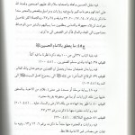
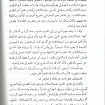
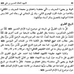
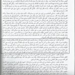
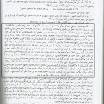

Karbala – the Facts and the Fairy-tales
The martyrdom of Al-Hussain at Karbala has truly become a tale of epic proportions. It would not be an outrageous claim if one were to suggest that across the globe there is a continuous matam (seasonal mourning processions) event in which the story of Al-Hussain at Karbala is being told. The tragedy of Al-Hussain is a tragedy without a doubt, though, for the Shia, it is a tragedy for all the wrong reasons, for there is little doubt that Shias have no idea of what truly transpired at Karbala. Instead, they are fed with fairy-tales and fabrications that know no end.
We request our Sunni readers to ask your Shia acquaintance to share with you the story of Karbala. There is little doubt that the zealous Shia will take this opportunity to share the tales that he has heard. Then, we request that you pop the most awkward question possible: Would you mind providing a source for this?
We are certain that the Shia will have nothing more to say other than: 1) this is what we were told at the matam, 2) everyone knows this, or 3) my mom told me.
The Shia has not yet realized the kind of predicament that he is in. This is because of their blind faith in those three “sources”.
Sadly, most Shias have never read through a book about the martyrdom of Al-Hussain. Yes, they do have one lying on their shelf, but they have never attempted to read it. Instead, they’d rather “listen” to the events of Karbala at their gatherings.
Why would this be considered a dilemma though?
We list out answers below in short and we will expand on them as we go along:
- Twelver Shias have no Idea what their “Real” Sources are in Regards to Karbala
- Statistics demonstrate Shia Manipulation of the Events of Karbala
- One Single Twelver Shia Narration does have a Chain!
- The Earliest “Shia” Sources
- Popular Re-tellings of Al-Hussain’s Martyrdom Conflict with the Earliest Shia Version
- Al-Hussain’s Reasons for heading to Kufa
- The Actions of Abu Al-Fadhl Al-Abbas in Karbala
- Did Al-Hussain save Islam?
- Al-Hussain’s Final Advice to Sayeda Zainab
- The Real Tragedy at Karbala
1- Twelver Shias have no Idea what their “Real” Sources are in Regards to Karbala
By sources, we mean books, or narrations, or texts. Receiving these narratives from parents or other family members is not sufficient. They simply weren’t there in the year 61 AH, nor were their grand-parents for that matter. The well-read English-speaking modern Shia, will most likely have picked up one of three books. “Nafsul Mahmoom” by Abbas Al-Qummi, “Maqtal Al-Hussain” by Al-Muqarram, or “A Probe into the History of Ashura” by Ibrahim Ayaati are the three most popular English books about Karbala.
However, all three of these books are relatively modern, and can be considered to be contemporary works. A Probe into the History of Ashura is the weakest of the three. Originally, it was a collection of lectures about the lessons of Ashura, which was then collected as a book. Abbas Al-Qummi attempts to keep the analysis to a minimal. Al-Qummi focuses on actually providing the reader with the proper source material for what makes up the events of the battle of Karbala. Abdulrazzaq Al-Muqarram sticks to the middle path. Al-Muqarram provides both an analysis of events while providing a multitude of quotations from the earlier sources.
Source Material
As for the source material, it is mainly based off four earlier works. They are Al-Irshaad by Al-Mufeed (413 AH), Ibn Shahrashoub’s (558 AH) Manaqib, Ibn Tawus’ (664 AH) Al-Lahoof, and Mohammad bin Abi Talib’s Tasliyat Al-Mujalis (10th century).
The first two sources in the list are books that contain a lot of information about the twelve Imams, while the last two are specifically about Al-Hussain and his martyrdom in Karbala. Sadly, none of the four sources rely on chains of narrations. This is extremely problematic since the reader does not have the ability to judge which report is authentic. More importantly, none of these four men were at Karbala, nor were their parents or grandparents present. However, shaikhs at the matam today, feel obligated to preach what is found in these four books as if every single word was canon.
The Solution
Of course, the modern Shia preacher will not restrict themselves to what these four books contain without a doubt. Indeed, they will need to spice things up once in a while by providing their own exaggerations.
In all cases, taking knowledge from sources that have been so disconnected from the reality of Karbala is hazardous. The status of Al-Hussain in the hearts of the Shia youth will allow for anything to flow in with the fabrications. This includes a corrupt ideology that has been entangled with the events of Karbala.
Ayatollah Mohammad Asif Muhsini describes this phenomenon by saying, “Most of the details of what occurred in Karbala are unknown, though the masses ask for what causes them to weep, and the preachers seek wealth and status, and this is what caused the current matter of the storytellers.” (Mashra’at Bihar Al-Anwar 2/156)
{kind=link}
For further reading on this topic, be sure to check out another one of our articles on the topic of how Shia scholars accuse preachers at Hussainiyat of fabricating stories in order to appeal to their fanbase.
2- Statistics demonstrate Shia Manipulation of the Events of Karbala
There are many ways for one to show how far Shia historians went in order to manipulate the events of Karbala to greater extremes. Below, we have included one set of statistics that display this fact. This was done when we compared the names of some of the companions of Al-Hussain and the number of those that they have killed during the battle of Karbala. To compile this little comparison, we relied on two sources: Al-Saduq’s (381 AH) Amali (p. 126-128) and Ibn Shahrashoub’s (558 AH) Manaqib (4/1006-1013). Notice that in a small time frame of two centuries, statistics have been distorted considerably over the coming centuries in favor of a more epic battle.
Al-Saduq in Al-Amali shows Al-Hurr bin Yazeed killing eighteen men (18), while Ibn Shahrashoub states that the number killed were “forty-something” (40+).
Then, Al-Saduq mentions that Habeeb bin Muthahir killed thirty-one men (31), while Ibn Shahrashoub mentions exactly twice as much as sixty-two (62).
He (Al-Saduq) mentions that Zuhair bin Al-Qayn killed nineteen men (19), while Ibn Shahrashoub adds a hundred and one more men to make the number: a hundred and twenty (120).
Al-Saduq mentions that Abdullah bin Muslim bin Aqeel killed three (3), while Ibn Sharhashoub mentions that he killed ninety-eight (98)!!
Note, that is how disproportional things may get in a mere two hundred years. Imagine how bad has it gotten since then.
Other Children of Ali and Al-Hussain?
It should also be noted that those that took part in Karbala that had names of the first three Caliphs were never given any attention. The sources mentioned earlier do refer to the participation of Abu Bakr bin Ali, Abu Bakr bin Al-Hussain, Omar bin Ali, and Uthman bin Ali, however, none of them were said to have killed anyone, with the exception of Omar bin Ali who killed one man according to one Shia narration. Perhaps it was their names that prevented the storytellers and fabricators from ascribing glorious feats to their names.
More fun facts from even earlier historians:
According to the early Shia historian Abu Mikhnaf (158 AH), only eighty-eight men (88) from Omar bin Sa’ad’s army were killed. (Tareekh Al-Tabari 3/1053)
Abu Mikhnaf also said that Omar bin Sa’ad’s army was four-thousand (4,000) men large. (Tareekh Al-Tabari 3/1053)
Ibn Shahrashoub being a much later Shia author suggests that the number was thirty-five thousand (35,000) men!! (Manaqib Aal Abi Talib 4/1004)
3- One Single Twelver Shia Narration actually does have a Chain!
Due to the lack of a complete text that examines the events of Karbala from beginning to end, a contemporary by the name of Mohammad Jawad Al-Tabasi collected his “Maqtal Al-Husaini Al-Ma’thoor”, in which he built his book upon the traditions that have been attributed to the Imams directly. His effort was a solid one, though it was the lack of data that ultimately betrayed him, for there was only one narration in his book that provided any clear image of the events that transpired in Karbala.
From his collection, the closest thing to a direct narration of the events of Karbala can be found in Amali Al-Saduq (381 AH). The narration is nine pages long. The modern Shia matam preacher will be saddened by how limiting nine pages must be, but alas, this is all that Shias really have to work with, if they wanted to be loyal to the text. Objectively, nine pages is by no means “small” narration, though, it is not long enough to fill the time slots at Hussainiyat matams.
Unfortunately for those that do not read Arabic, we are not interested in putting in the effort to translate fabrications. Indeed, this narration is a fabrication according to the standards of Ahlul-Sunnah and Shias alike.
The chain goes as follows:
Al-Saduq, from Mohammad bin Omar Al-Baghdaadi, from Abu Sa’eed Al-Hasan bin Uthman bin Ziyad Al-Tusturi, from Ibrahim bin Ubaidullah bin Musa bin Yunus bin Abi Ishaaq Al-Sabee’ee, from Mareesa bint Musa bin Yunus bin Abi Ishaaq, from Safiyya bint Yunus bin Abi Ishaaq, from Bahja bint Al-Harith bin Abdullah Al-Taghlabi, from Abdullah bin Mansour, from Ja’afar Al-Sadiq.
Chain Criticism
Most of the narrators in this chain are anonymous according to both Sunni and Shia rijali standards. Sunnis go the extra mile by accusing Al-Hasan bin Uthman of being a liar. See his biography in Lisan Al-Mizan where Abu Ali Al-Nisapuri and Ibn Adi both accuse him of lying. Even the Shia scholar Ni’matullah Salihi reached the same conclusion about Al-Hasan bin Uthman. (See Al-Shaheed Al-Khalid p. 346)
Textual Criticism
Moreover, the narration itself is extremely problematic for several reasons:
- The narration mentions that Utba bin Abi Sufyan is appointed as governor of Madinah, when in reality, Utba died in the year 44AH according to Ibn Zabr Al-Rib’ee 1/143.
- Al-Hussain leaves Madinah and heads directly to Iraq. This contradicts the established fact that he went to Makkah where he spent months there before leaving to Iraq.
- Ubaidullah bin Ziyad kills Sinan bin Anas, the killer of Al-Hussain, when Sinan brings in Al-Hussain’s head. This is illogical and goes against the established fact that Sinan was alive and stayed alive until the time of Al-Hajjaj. (See Al-Tabarani’s Mu’jam 2/704)
The narration provided by Al-Saduq does one thing differently though. It contains exaggerations that cannot be found in earlier sources that have been provided by Sunnis. These include visions by Al-Hussain, his certain knowledge of his martyrdom, and tales about how he killed people by supplicating against them. Even though the modern Shia may reject that these are exaggerations, one needs to keep in mind that it is only because they have been used to the exaggerated narratives every time they walk into a matam.
4- The Earliest “Shia” Sources
Perhaps there are two other sources that may be interpreted to be “Shia sources”. We use that word loosely since we hold the opinion that these two have nothing to do with the Imami narrative. The first of these is a narration by Mohammad Al-Baqir, the fifth Shia Imam. In this narration, his student, Ammar Al-Duhani asks him to narrate to him the events of Karbala “as if he could see it.” The narration itself is not too long either and it can exclusively be found in Sunni sources. Scholars that often quote this report do so through Tareekh Al-Tabari, though it can be found elsewhere. Of course, Shias often shun this narration simply because it comes through a Sunni source.
Sunnis shouldn’t blame Shias though, since we feel the same way about their sources. Ironically, Sunnis themselves take this narration with a grain of salt because it comes through the path of a narrator named Khaled bin Yazeed Al-Qasri, who is extremely weak in his narrations. Some Sunnis have flat out rejected this narration for the same purpose.
The other source is perhaps the most important complete early source about the events of Karbala. Abu Mikhnaf Lut bin Yahya’s rendition of Maqtal Al-Hussain has always been the skeleton of the Karbala narrative. Fabricators often would keep his narration as the base, but then add onto it. This is very clear in the actual battle of Karbala if one were to compare Abu Mikhnaf’s narration and the late sources that have been mentioned above.
Abu Mikhnaf’s Reliability
{kind=link}
{kind=link}
In regards to the reliability of Abu Mikhnaf’s tradition, Al-Tusturi, in his Mu’jam Al-Rijal 8/620 says that “his book Maqtal Al-Hussain (as), that is narrated by Al-Tabari and Abu Al-Faraj, is the most authentic maqtal (retelling of the death of Al-Hussain), for he narrates these events usually through one single intermediary.” Al-Najashi, similarly, when speaking about Abu Miknaf p. 320, says, “There is an acceptance to what he narrates.” Ayatullah Al-Salihi makes a very similar statement in his Al-Shaheed Al-Khalid (p. 39), where he argues that Al-Murtadha and Al-Tusi both relied on Abu Mikhnaf’s version through Al-Tabari. Al-Salihi continues to build the case for Abu Mikhnaf by saying that he was a student of Ja’afar. All in all, the man is considered reliable by their standards… but does that he mean his narration is authentic as they claim?
Abu Mikhnaf’s Teachers
Of course, such statements are never satisfying to researchers, which is why we took it upon ourselves to list the teachers of Abu Mikhnaf in his Maqtal Al-Hussain, in order to see if his narrations are reliable according to Shia standards:
Narrators that are weak according to Al-Jawahiri:
- Abdulrahman bin Jundub – He is anonymous according to Al-Jawahiri p. 309.
- Yunus bin Abi Ishaaq – He is anonymous according to Al-Jawahiri p. 678.
- Qudama bin Sa’eed – He is anonymous according to Al-Jawahiri p. 468.
- Al-Harith bin Ka’ab Al-Wabili – He is anonymous according to Al-Jawahiri p. 124.
- Aqaisa – He is anonymous according to Al-Jawahiri p. 376.
- Isma’eel bin Abdulrahman Al-Suddi – He is anonymous according to Al-Jawahiri p. 67.
- Al-Harith bin Husaira – He is anonymous according to Al-Jawahiri p 123.
- Amr bin Murra – He is anonymous according to Al-Jawahiri p. 437.
- Ata’a bin Al-Sa’ib – He is anonymous according to Al-Jawahiri p. 374.
- Uqba bin Basheer – He is anonymous according to Al-Jawahiri p. 375.
Narrators that cannot be found in early Shia Rijal books:
- Al-Hajjaj bin Ali
- Abu Al-Mukhariq Al-Rasibi
- Numair bin Wa’la
- Al-Saq’ab bin Zuhair
- Al-Mu’ala bin Kulaib
- Mujalid bin Sa’eed
- Al-Hasan bin ‘Uqba
- Yusuf bin Yazeed
- Abu Janah Yahya bin Abi Hayya Al-Kalbi
- Sulaiman bin Abi Rashid
- Ja’afar bin Huthaifa Al-Ta’ee
- Sa’eed bin Mudrik
- Hisham bin Al-Waleed
- Omar bin Khalid
- Lawthan
- Uqba bin Abi Al-Ayzar
- Jameel bin Murthid
- Al-Nadhr bin Salih
- Abdullah bin Asim Al-Fa’ishi
- Fudhail bin Khadeej
- Ali bin Hanthala
- Suwaid bin Hayya
- Thabit bin Hubaira
- Yahya bin Hani’ –
- Al-Hussain bin Uqba Al-Muradi
- Zuhair bin Abdulrahman
- Amr bin Shu’aib
Others:
- Mohammad bin Qais – There are many people with this name and Abu Mikhnaf was not clear about the entity of his teacher, therefore, we cannot comment on his status and cannot accept his report.
- Abu Ali Al-Ansari – There is not enough information about this narrator to identify him or accept his report.
- Abu Al-Dahhak – There is not enough information about this narrator to identify him or accept his report.
- Ja’far bin Mohammad bin Ali – 6th Shia Imam
- Abu Hamza Al-Thamali – Trustworthy according to Shia.
As we can see from the above, out of the forty-two teachers that Abu Mikhnaf has relied on, only two are reliable according to Shia standards.
One of the two narrations is by Abu Hamza Al-Thamali and it is about reactions to the death of Al-Hussain in Dimashq (Syria). Abu Mikhnaf narrates it from Abu Hamza, from Abdullah Al-Thamali, from Al-Qasim bin Bikheet. The latter two are both anonymous for they cannot be found in early Shia Rijal books.
One Authentic Shia Narration
That leaves us with one narration that could be considered authentic according to Shia standards. We are considerate of our choice of words too, since there are Shias scholars that may consider it weak since the path to Abu Mikhnaf is questionable. Regardless, we chose to translate in full. We have quoted it from Tareekh Al-Tabari 3/1052:
Abu Mikhnaf said: from Ja’afar bin Mohammad bin Ali:
{kind=link}
When Al-Hussain was killed, they found thirty-three stabs and thirty-four wounds. Sinan bin Anas used to forcefully approach anyone that would get near the body because he wanted to be the one that gets the head. He then did, and gave it to Khawli. Everything that was on Al-Hussain was taken. Bahr bin Ka’ab took his parts. Qais bin Al-Ash’ath took his cloak. Qais, then, became known as “The Cloak.” His sandals were taken by a Al-Aswad, a man from Bani Awd. His sword was taken by a man from Bani Nahshal bin Darim, and it reached Habeeb bin Budail at the end.
The people came to his clothes, accessories, and camels, and they took all of it. The people came to the women, the booty, and his equipment, to the extent that a woman would fight over the clothes on her back until it was taken away from her.
5- Popular Retellings of Al-Hussain’s Martyrdom Conflict with the Earliest Shia Versions
a) Al-Hussain’s Reasons for heading to Kufa
If one was to simply come across the events that led up to Karbala, one would have no doubt that Al-Hussain’s revolution was intercepted and quelled. His intention, as one can clearly see in the earliest reports, was to fill the land with justice and to politically reign over the nation. This also was the perfect time to do so since he had the support from the people of Kufa that he did not have when Mu’awiayh was in power.
However, according to the modern Shia interpretation, Al-Hussain knew that he was going to die by going to Kufa. In other words, he was sacrificing his own life for the sake of Islam. Twelvers hold this belief because it fits in with their ideology that the Imams know when they are going to die.
One of the staunchest supporters of this theory is Abdulrazzaq Al-Muqarram. He says:
He made many such explicit and implicit statements in Medina, in Mecca, and on the way to Kufa, statements that you will read in this book in their entirety. They all testify that he (‘a), was fully aware of his being killed on the day with which he was familiar and in the land of Karbala’. So, can anyone doubt this fact if he reads his sermon in Mecca when he wanted to travel from there to Iraq? In that sermon, he said, “I can see my limbs being cut to pieces by wild beasts in an area between al-Nawawees and Karbala’, so they will fill with my body empty stomachs and starved pouches; there is no way to avert an event already decreed.”
We beg to differ of course. There is no evidence that suggests that Al-Hussain knew of what was to come and there are too many evidences that suggest otherwise.
Response to Al-Muqarram
Below are some points from the earliest version of the events of Karbala by Abu Mikhnaf:
- When asked about where he wanted to go after fleeing Madinah, Abdullah bin Mutee’ asked Al-Hussain where he was heading to. Al-Hussain replied: Currently, I am going to Makkah, then I will make istikhara (a prayer in which one asks Allah for guidance when making a tough decisions) as to where to head off to next. He also mentions his intention of making istikhara to Ibn Abbas (Tareekh Al-Tabari 3/1012, 3/1025)
- Al-Hussain writes a letter to the people of Kufa in which he states that he will send his cousin Muslim bin Aqeel to verify their need for him, and it is only then when he will make a move to Kufa. (Tareekh Al-Tabari 3/1013)
- Muslim bin Aqeel had no idea that Al-Hussain knew that he was marching towards his doom until the last moments in his life. If Muslim held previous knowledge, he wouldn’t have requested sending a warning to Al-Hussain. (Tareekh Al-Tabari 3/1022)
- Al-Hussain spent four months in Makkah (Tareekh Al-Tabari 3/1024). He had no reason to spend all that time in Makkah if his purpose was to get killed.
- Al-Hussain justifies his leaving towards Kufa because of the letters that he received (Tareekh Al-Tabari 3/1025)
- Al-Hussain asks Al-Farazdaq about the status of the people of Kufa in order to learn if he can trust them. (Tareekh Al-Tabari 3/1028)
- Al-Hussain heads to Kufa with women and children from his family. This is not an action that one would take if one believed that they would be massacred. His intention was to arrive in Kufa, live in Kufa, and reign over it. (Tareekh Al-Tabari 3/1029)
One More Piece of Evidence
Out of all the above, this is the most important narration that solidifies the view that Al-Hussain had no idea what he was getting himself into:
Abu Mikhnaf states: As for what was told to me by Mujalid bin Sa’eed, Al-Saq’ab bin Zuhair Al-Asadi, and others of the traditionalists, and this is the view of the community of the traditionalists, is that he (Al-Hussain) said: Choose one out of three things for me: Either I go back from whence I came, or I put my hand in the hand of Yazeed and we settle this ourselves, or you send me to a Muslim border town and I live amongst them. (Tareekh Al-Tabari 3/1036)
This statement speaks volumes, it shows that when al-Hussein faced the army of Omar bin Sa’ad he wished to settle things peacefully and return safely with his family. It suggests that Al-Hussain was not only having second thoughts, but changed his mind about the rebellion once he realized that he was outnumbered and that he was marching towards not only his death, but the massacre of his own family.
b) The Actions of Abu Al-Fadl Al-Abbas in Karbala
According to popular retellings today, there is no character that is blown out of proportion as Abu Al-Fadhl Al-Abbas bin Ali bin Abi Talib. The tragic story of his death during battle has captured the hearts and minds of all Shias around the world, to the extent that Al-Abbas is referred to by the extreme Shia as Bab Al-Hawa’ij (The Door to Needs). Extreme Shias, sadly, ask him for their sustenance and have turned him into a godly figure.
The modern Shia, when asked about Abu Al-Fadhl Al-Abbas will tell you that the army of Omar bin Sa’ad prevented Al-Hussain and his companions, who were dying of thirst, from drinking from a water resource nearby. Al-Abbas, headed over to gather some water and was confronted by the army of Omar bin Sa’ad. Al-Abbas bravely challenged thousands of men, killing tens, if not hundreds, if not thousands, depending on who you ask. Then, Al-Abbas’ arm was cut off during the battle. However, he continued to fight. Then, his other arm was cut off. Al-Abbas continued to head towards Al-Hussain’s camp with the container of water clenched between his teeth, but alas, the army of Omar bin Sa’ad killed him before he could make it back. This scene has been translated into film and is seen as an accurate representation of the events by the modern Shia.
Original Version?
However, the narration of Abu Mikhnaf, the earliest Shia version, conflicts with this version completely.
First of all, Al-Abbas does not go to retrieve water alone, but is accompanied by thirty riders and twenty foot-soldiers. Furthermore, there is no mention of any casualties, with the exception of one of the companions of Amr bin Al-Hajjaj, from the army of Omar bin Sa’ad. He was stabbed by Nafi’ bin Hilal. The narration ends with Al-Abbas and Nafi’ succeeding in retrieving the water. Al-Abbas never has his arms cut off, nor is he portrayed as a one-man army. (Tareekh Al-Tabari 3/1036)
{kind=link}
It is important to be aware Al-Abbas is only mentioned in battle once more in the narration of Abu Mikhnaf (Tareekh Al-Tabari 3/1050) and there is no mention of any superhuman strength. He makes no other appearances or contributions.
c) Did Al-Hussain save Islam?
This is a question that Shias do not pose to themselves, even though it is often heard on pulpits that Al-Hussain’s rebellion saved Islam.
The origin of this reasoning is the suggestion that Yazeed was so corrupt that his reign would lead to the complete destruction of Islam and the erasure of Shari’ah law.
Of course, such arguments cannot be supported with any evidence. Shias often attempt to provide narrations that suggest that Yazeed was a womaniser or a drunkard. However, neither sin is anywhere as severe as denying the Imamate of the Imam, let alone the usurpation of the position of the Imam. Hence, by Shia standards, Abu Bakr and Omar are infinitely worse than Yazeed, for the latter only came to power through inheritance, while Abu Bakr and Omar actively took Ali’s “divinely ordained rights”. In other words, Al-Hussain’s rise against Yazeed could not logically have anything to do with immoral behaviour by Yazeed.
Next, we ask, how did Al-Hussain save the Shari’ah? Al-Hussain was not able take the reins of the nations from Yazeed, and eventually, a few years later, Yazeed died from natural causes.
Al-Hussain’s rebellion did not cause a ripple in the ideology of the Muslims of the time, nor did it change the political situation. For the next ninety years, Bani Umayyah stayed in power. The rest of the Twelve Imams disappeared from the lime lights of early Islamic politics. It is not logical to conclude that Al-Hussain was politically victorious or that he was able to save Islam, nor was there anything special about Yazeed for one to assume that Islam was in a great new danger in the first place. The only victory for Al-Hussain is his martyrdom and the rewards that Allah will bestow upon him for attaining that martyrdom.
d) Al-Hussain’s Final Advice to Sayeda Zainab
In the earliest narration by Abu Mikhnaf, when Al-Hussain realized that he was going to battle, he said to Sayeda Zainab: “O’ sister, do not break what I swore, for you shall not tear your pockets, scratch your face, or call for death upon yourself because of what becomes of me.” (Tareekh Al-Tabari 3/1039)
In modern times, Abdulrazzaq Al-Muqarram calls for the exact opposite. He says: “The things that remind people of al-Husayn (‘a), in their various methods, such as commemorative majalis, mournings, beating the cheeks at homes and in the streets…, help promote the sect.” He also provides late narrations to support this position.
6- The Real Tragedy
Since we have established two different accounts, examining the claims as to what makes a greater tragedy is necessary. As we have pointed out, the modern Shia position is that Al-Hussain knowingly sacrificed himself for the greater good. Not only that, but he sacrificed his family, by bringing them along with him to get sacrificed by the army.
Contemporary Shias like Al-Muqarram argue that Al-Hussain brought women with him as witnesses. Their role was to speak of what they saw, in order to expose Yazeed and his actions. Yet, this argument does not stand, for it cannot be applied to the children, like Abdullah the infant, as well as the children of Abdullah bin Jafa’ar bin Abi Talib, whom Al-Hussain brought along to be sacrificed along with him.
The Sunni View
The Sunni position states that Al-Hussain’s martyrdom was a tragedy due to the circumstances. The view held by Sunnis is supported by the earliest Shia position, as per the narration of Abu Mikhnaf,
Al-Hussain was enticed into joining the people of Kufa by the pleas of their people. Were it not for their pleas, he wouldn’t have been a victim. Continuing on, the people of Kufa ditched Al-Hussain out of fear for their own safety. Most importantly, as soon as Al-Hussain realized his predicament, he wishes for his safety and the safety of his family. He appeals to the religiosity of his opponents. Al-Hussain asks them to be sent to Yazeed directly, or to be left to go back from whence he came. However, the pride and tyranny of Umar bin Sa’ads army outweighed their humanity. Ultimately, they killed Al-Hussain, who did not wish for any bloodshed.
Al-Hurr bin Yazeed puts it perfectly when he cries: “Don’t you accept from these men what they propose?! If the Turks and the Daylam requested this, it would have been impermissible to reject them!”
That is the tragedy and peace be upon al-Hussein our master.
Salaam.
In your article you said that “The Sunni position, which is supported by the earliest Shia position, as per the narration of Abu Mikhnaf, states that Al-Hussain’s martyrdom was a tragedy due to the circumstances”
What about Hadith(s) mentioning Prophet (s.a.w.w) foretelling his wife Ummul Momineen Hadrat Umm e Salamah (r.a) about the unjust killing of Imam Hussain (a.s).
Secondly, why did Imam Hussain (a.s) choose the disloyal Kufians over his close companions who were advising him not to go to Iraq for the Betrayal of Kufians were known to all.
Why did Imam Hussain (a.s) go with his family to Iraq when the risks were very high as the treachery of Kufians were openly known to Imam Hussain (a.s) and People of Madinah.
Lets assume hypothetically, If people of particular country call me to come to their country as they would like to make me their President over someone with whom I have family feud. And the people who are calling me are known for their betrayal. Would it be reasonable for me to go that country with my family or would this be more reasonable that I gather an army or take high security measures before coming to that country.
Wa alaykum alsalam,
Indeed, there are narrations that state that Al-Hussain was going to be killed. Though, there is no indication of the time in which he would be killed. Due to this, he had no issue with living in Iraq during the eras of Ali or Al-Hasan, even though narrations suggest that he would be killed there. Al-Hussain expected to take control of Kufa and do the Ummah a service. In his mind, he may have been killed twenty years after taking control of Kufa. Unfortunately, he never even made it into Kufa.
Furthermore, Al-Hussain trusted many Kufans. He did not see them all as disloyal. He did take precautions by sending Muslim bin Aqeel as well just to make sure that this rebellion was certain. Also, his close companions did not advise him not to go. You may provide references for this from the narrations of reliable narrators if you wish.
I appreciate your reflections on the article, but do you have any tangible evidence that supports your theory? Where are your reliable sources for the martyrdom of Al-Hussain?
May Allah guide us both.
Thanks so much for this informative essay. I always wondered why the Shia clerical class reiterate and dramatize this very tragic part of the history of Ummah in their temples and rituals. I find this article interesting, well researched and instructive because I personally rarely bothered to research the matter, partly to avoid feeling sad (i.e. knowing the gory details of how the prophet’s grandson was martyred). I also felt that I did not need to know much about this incident because as tremendously tragic as it is, it is irrelevant to today’s situation of the Muslim people and it should not be used to sow seeds of discord among people as the Shia clerics do on regular basis as part of a very dirty psychological operation manipulating and exploiting deep human emotive vulnerabilities.
There is no doubt that the Messenger of Allah (SA) was aware of many divinely decreed issues. Hussain (RA) may have been one of them. After reading this article, I see that the Shia have incorporated the sacrificial narrative of the polytheist Christians and made out of Hussain (RA)’s another Jesus Christ.
I see that all Ijtaba’s questions are all about why Hussain (RA) made this decision or that judgement at a particular point in time many hundred year ago; the answers to these questions require a comprehensive understanding of Hussain’s (RA) intentions based on thorough and reliable scholarly research. There is also possibility that we may never know the exact and full answers as only Allah has that knowledge. So, why it is so important?
May Allah guide Ijtaba and other people who have been misguided and deceived by these satanic clerics and their lies.
😊 Thanks for posting this article i feel its very interesting
While the story may have grown, bottomline is that Imam Hussain (as) was brutally killed by Yazid and Ibn Ziyad’s forces. Moreover, the progeny of the Prophet was imprisoned.
These are unforgivable crimes.
The Shia forsook Husayn and his grandson Zayd. Unforgivable, they should all be cursed no?
If you sit and listen to the Majaalis you will come to know there is very little history which is known because there were very few people left who were eye witnessed and it took time to spread the message to generations. But in Majaalis they repeat it in different ways to keep Imam Hussain martyrdom fresh in every one heart.
The point is to love Imam Hussain and show respect. Don’t be like the one who were fighting against Imam Hussain, be like the one who support Imam Hussain. The one who were fightig against Imam Hussain are perished and no trace can be found, Imam Hussain will stay alive in every momineen heart.
Imam Hussain the leader of Jannat and we are proud followers of our leader.
Al-Hussain does not need forgers to make his “martyrdom fresh”. We, as followers of Al-Hussain, preach his history and warn the Muslims of the lies that have been concocted about his martyrdom.
No doubt that Shias are exgrating the event of karbala, But there is no doubt that Yazeed was an infidel. so please say anything but do not defend yazeed.Rest You muslim go fight each other , shed bloods and make fatwas of Kufr to each other. What i saw there is no Islam among us so Dont proof yourself to be a true muslim.
May GOD Show us the Right path(ISLAM), which we lost on the day when MUHAMMAD (PBUH) DIED.
Yazeed is not a forefather of the creators of the website, so we do not have a bias to defend him. Yazeed will go down in history as one of the worst rulers of the Islamic Empire, but that does not mean that every criticism against him was true.
You a follower of Hussain? What resembles of your religion that reflects Hussain’s Actions?
May Allah guide you
We are followers of Muhammad and anyone who follows the Prophet peace be upon him.
Great reply. Mashallah!
Were the people of kufa the early shias ?
Majority of Kufans were Shia, among them were political Shia and religious sectarian Shia of various kinds. This is because `Ali was based in `Iraq and so his “fanbase” is in `Iraq.